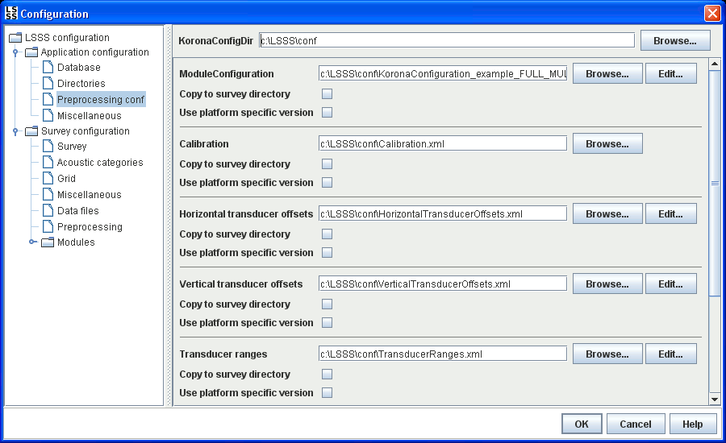

This dialog shows the paths to the default set of config files for the preprocessing. These files are intended as reference config files, and can be copied to the survey directory for use with the survey when a new survey is created. See Preprocessing for more information on the use of these files.